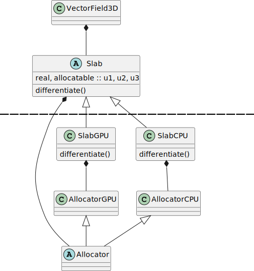
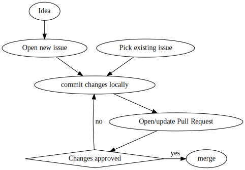

or how to use GPUs without duplicating everything.
Thibault Lestang
Xcompact3d showcase event 04.2023
program main
use mymodule, only: mykernel
use cudafor
implicit none
integer, parameter :: N = 40000
real :: x(N), y(N), a
real, device :: x_d(N), y_d(N)
type(dim3) :: grid, tBlock
tBlock = dim3(256,1,1)
grid = dim3(ceiling(real(N)/tBlock%x),1,1)
x = 1.0; y = 2.0; a = 2.0
x_d = x
y_d = y
call mykernel<<<grid, tBlock>>>(x_d, y_d, a)
y = y_d
! ...program main
use mymodule, only: mykernel
#ifdef CUDA_ON
use cudafor
#endif
implicit none
integer, parameter :: N = 40000
real :: x(N), y(N), a
#ifdef CUDA_ON
real, device :: x_d(N), y_d(N)
type(dim3) :: grid, tBlock
tBlock = dim3(256,1,1)
grid = dim3(ceiling(real(N)/tBlock%x),1,1)
#endif
x = 1.0; y = 2.0; a = 2.0
#ifdef CUDA_ON
x_d = x
y_d = y
call mykernel<<<grid, tBlock>>>(x_d, y_d, a)
y = y_d
#endif
! ...data: $(u_x, u_y, u_z)$,
operation:
$\frac{\partial}{\partial x}$
type :: slab
real, allocatable :: u1, u2, u3
integer :: nx, ny, nz
end type slabtype :: slab
real, allocatable :: u1, u2, u3
integer :: nx, ny, nz
contains
procedure, public :: differentiate
end type slab
! ..
type(slab) function differentiate(self, dx)
class(slab), intent(in) :: self
real, intent(in) :: dx
! ...
end function differentiatetype, extends(slab) :: gpu_slab
contains
procedure, public :: differentiate
end type gpu_slabmodule operations
use slab_module, only: slab
implicit none
! ...
contains
type(slab) function advect(slab, alpha, dx)
class(slab) :: s
real :: alpha
real :: dx
advect = s%differentiate(dx) + alpha * slab
end function advect
! ...CUDA, you say?


subroutine diff(self, f, df)
!! Compute derivatives along the second dimension of an input 2D
!! array using compact finite-differences stencils. The stencils
!! are first applied before computing the solution by solving the
!! associated tridiagonal systems.
!!
!! -->
!! _
!! O - O - O - | O | - O - O - O - O - O - O - O - O
!! O - O - O - | O | - O - O - O - O - O - O - O - O
!! O - O - O - | O | - O - O - O - O - O - O - O - O
!! O - O - O - | O | - O - O - O - O - O - O - O - O
!! -
!!
class(diffengine_t), intent(in) :: self
!> Input array. Size along second dimension should be equal to
!> the `allocator_t` instance `length` component.
real, intent(in) :: f(:, :)
!> Output array. Shape is identical to the input array's.
real, intent(out) :: df(:, :)
! ...docs
├── docs-requirements.txt
├── Makefile
└── source
├── conf.py
├── developer
│ ├── build.rst
│ ├── contributing_guidelines.rst
│ ├── contribution_workflow.rst
│ ├── dev_environment.rst
│ ├── index.rst
│ ├── style.rst
│ ├── tooling.rst
│ └── writing_docs.rst
├── index.rst
├── internals
│ ├── allocator.rst
│ ├── index.rst
└── report_a_bug.rst$ make html